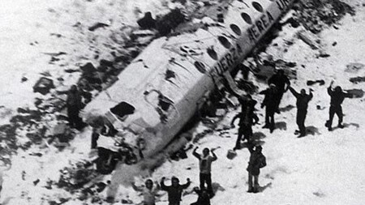
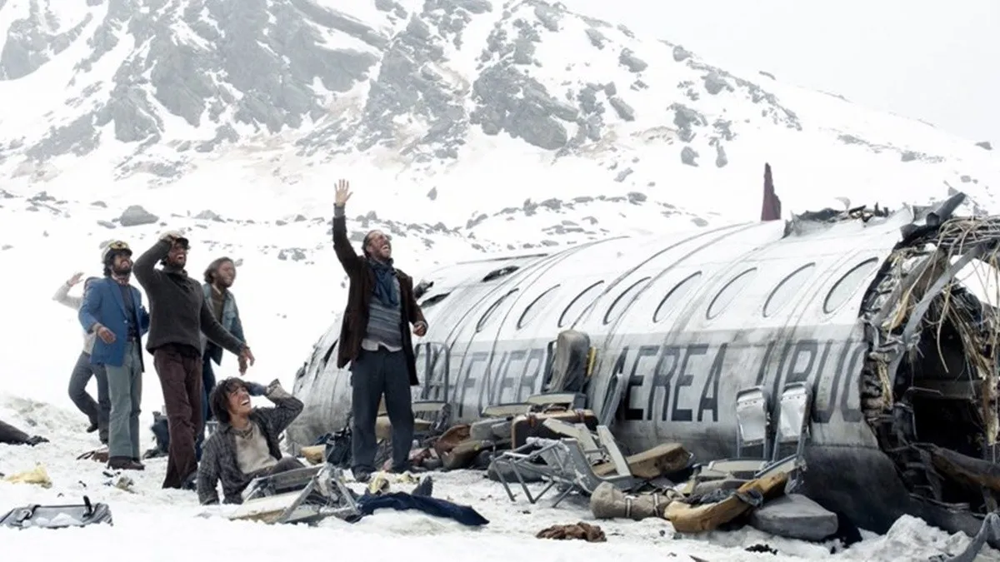

Farid Dieck es un escritor, creativo y conferencista originario de Monterrey, Nuevo León.
Es cofundador de la agencia creativa Porciento dedicada a la creación de contenidos digitales.
Apasionado de la filosofía, la psicología y el arte en diversas expresiones como lo son la música y la poesía. Como reflejo de esto, su primera carrera fue una Ingeniería en Producción Musical por el Tec de Monterrey y actualmente se encuentra estudiando una Licenciatura en Psicología por la UNAM, así como una maestría en salud mental: Clínica psicoanalítica por la Universidad de León de España.
Farid también ha estudiado filosofía moral y ciencias de la felicidad mediante diplomados impartidos por las universidades de Yale y Berkeley, respectivamente.
Hoy, cuenta con más de 4 millones de seguidores en sus diferentes redes sociales y ha logrado presentarse como conferencista en más de 10 países en América y Europa transmitiendo su mensaje a personas de todas las edades, de igual forma resalta como autor, teniendo libros como Para ti, Palalmas y su más reciente ejemplar Futuralgia.
La sociedad de la nieve es una película de drama histórico que se centra en la vida de un grupo de personas que viven en un pueblo de Monterrey, Nuevo León, en la década de 1930. La película sigue la vida de un grupo de personas que viven en un pueblo de Monterrey, Nuevo León, en la década de 1930. El grupo está compuesto por un grupo de personas que viven en un pueblo de Monterrey, Nuevo León, en la década de 1930. El grupo está compuesto por un grupo de personas que viven en un pueblo de Monterrey, Nuevo León, en la década de 1930.
El resumen de la película La Sociedad de la Nieve comienza con el vuelo 571 de la Fuerza Aérea Uruguaya despegando de Montevideo, Uruguay, con destino a Santiago de Chile. El vuelo está lleno de estudiantes y sus familiares, así como con miembros del equipo de rugby Old Christians. El vuelo se ve afectado por una tormenta de nieve y se estrella en un glaciar en los Andes. Solo 29 de los 45 pasajeros y tripulantes sobreviven al accidente. Los sobrevivientes están atrapados en uno de los entornos más hostiles del planeta. No tienen comida, agua ni refugio. Las temperaturas son bajo cero y el riesgo de hipotermia es alto. Los sobrevivientes se organizan para sobrevivir. Se construyen refugios, y se recolectan agua de los glaciares. Después de 72 días, dos de los sobrevivientes, Roberto Canessa y Nando Parrado, deciden intentar cruzar los Andes para buscar ayuda. La Sociedad de la Nieve es una película española de suspenso y aventura dirigida por Juan Antonio Bayona, basada en la novela homónima de Pablo Vierci.

La "Sociedad de la Nieve" es el nombre dado a un grupo de sobrevivientes uruguayos que quedaron atrapados en la Cordillera de los Andes en 1972, después de que su avión se estrellara en medio de una tormenta mientras viajaban a Chile. Este trágico evento se conoce comúnmente como el "Milagro de los Andes".
El vuelo 571 de la Fuerza Aérea Uruguaya transportaba a 45 personas, incluyendo miembros de un equipo de rugby, sus familiares y amigos. Después de estrellarse en una remota región de los Andes, 12 personas murieron en el impacto inicial y otros murieron en los días y semanas siguientes debido a las lesiones, el frío y la falta de alimentos.
Los sobrevivientes enfrentaron condiciones extremadamente adversas, incluyendo temperaturas congelantes, falta de comida y la dificultad de ser localizados en medio de las montañas. Ante la falta de recursos, algunos de los sobrevivientes tomaron la decisión extrema de recurrir al canibalismo para sobrevivir.
Después de 72 días de aislamiento y desesperación, dos de los sobrevivientes, Nando Parrado y Roberto Canessa, emprendieron una caminata épica a través de las montañas en busca de ayuda. Finalmente, encontraron a un arriero chileno que les proporcionó ayuda y condujo a las autoridades al lugar donde estaban los demás sobrevivientes.
La historia de la Sociedad de la Nieve ha sido objeto de numerosos libros, documentales y películas, incluyendo "¡Viven!" (1993), dirigida por Frank Marshall, basada en el libro del mismo nombre escrito por Piers Paul Read. Este evento ha sido estudiado no solo como un ejemplo extremo de supervivencia humana, sino también por las cuestiones éticas y morales que surgieron en medio de la lucha por la supervivencia.
